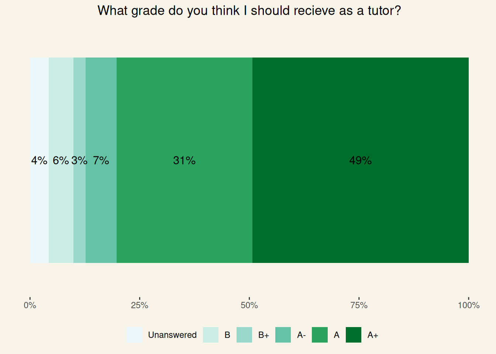

Describe me as a tutor in three words. A summary of the responses collected so far
Students Review
UPDATED AT THE END OF 2024
I love teaching. I love spending time in class discussing interesting topics and having conversations with students. It’s one of my favourite parts of being a young researcher. I often think about how to be a better educator, set up my tutorials, and create a positive environment in my classes. How can I grab and maintain students’ attention (especially at 8.00 am on a Monday)? How can I explore a concept from a different perspective from the one provided in class by professors? How can I create and encourage a class environment without a strict hierarchical structure?
I’m by no means close to implementing my ideal lab time. A time focused on active learning based on challenging but meaningful activities that expand what was covered in class. A time when we, the educators, guide conversations and discussions rather than simply providing information. Part of the cause is definitely my fault for not being able to fully implement and create what I wish my labs would be. The other part is played by the university system not considering laboratories and tutorials that important, which is evident in underfunding for tutors, stagnant teaching material and the lack of feedback we receive.
Because of this, I have been proactively collecting reviews and feedback from the students in my tutorials. At the end of each semester, I encourage them to constructively review my work as an educator. I do so through an anonymous survey, which I keep short and light, knowing that no one wants to spend much time answering questions, especially when the exam period is approaching. In class, I encourage students to provide any type of feedback, positive or negative, especially negative, as I want to use it as a building block to improve semester through semester.
We all know that often feedback is not really used to change anything. Most of the time, it is just assessed by the administration to see if some KPIs have been met. I hate that. So, in the name of transparency and self-accountability, I decided to post all the anonymous feedback here (this is clearly stated in the survey). In the page below, I try to summarise the overall reviews, and I address the points I believe are important for me to consider or reply to.
Disclaimer: I won’t censor any comments except those containing private or sensitive information irrelevant to my role as an educator. I will add a note if this happens.
Students’ marks
I like to give students the opportunity to “sit on the other side of the desk” and have the opportunity to review my work with a grade. The first question is a benchmark to see how I am doing compared to the other classes they take. I have not completed my undergrad in New Zealand, so I do not have a clear idea of what a good or bad tutorial can be.

80% of those who completed the survey considered my tutorials above average according to their experience. About one-sixth retained them to be within the average range, and no one was below average. I believe this is a great benchmark that shows that my classes are (1) positively different or at least similar to other classes and (2) appreciated by students.
The second question asks literally for a grade. I think it could be a cathartic moment being able to grade the person who has been grading your coursework. Moreover, if taken seriously, grading can make you reflect on the way you evaluate experiences. Was something really that good or that bad? Were the tutorials really so dull or so exciting? Maybe I was just tired or maybe I just liked the content but not the delivery.

The grade aligns with the coarse benchmark above. 87% of students who completed the survey would be happy to grade my work within the A range (A-, A, A+), and over half of these grades are an A+. Although we often dislike skewed distribution, I think this is a good one. There are no grades below a B, so I think I have happily passed my exam for now.
What students appreciate
There are a few core trends that started to come up over time. Firstly, students appreciate being in an environment that supports and encourages asking questions and sharing thoughts and ideas without worrying. I’m very glad this is a shared sentiment in my classes as this is one of my personal goals towards an ideal cooperative, collaborative and welcoming class.
I’ve had the pleasure of being in your tutorial stream 2 years in a row and have enjoyed it both times. You encourage discussion so naturally and are incredibly supportive when students share their ideas even if they’re not necessarily the answer you were looking for. I really appreciate the depth with which you explain the lab topics and truly think my learning has been much improved in the lab sessions!
Support! You were very supportive and accurately explained what was required to do well in this class, and explained what we did not need to know as extensively - which was much appreciated as often times labs can be seen as just an overload of information.
You did a great job in tutorials giving people opportunities to ask for help of they needed it and checking to make sure we were on the right track. Also you kept it engaging by relating the various topics and ideas to your own interest and the wider ideas around the topic, encouraging broader thinking about it.
A second topic seems to be engagement. All those years spent performing as a magician are paying back now. I’ve always treated teaching as a magic act. You need to be able to draw and maintain attention, convey a story and have fun. I always find interesting how some of the most popular “academic” videos are of professors doing something unexpected and interesting. I think we (educators) should all experiment in our classes with the way we present, the way we interact with students and the activities we do.
You explained all the concepts really well, and often in different ways if we didn’t understand. You also made tutorials fun and worth coming to and I always left feeling like I’ve learnt something. Yours is also the only tutorials that I looked forward coming to!
Really engaging, even though I hated the mini presentations idea initially it did help me prepare for a presentation assignment in another paper! You are very knowledgeable, helpful and clearly passionate about teaching others about the brain!
A specific reply to the last comment. I totally understand how mini-presentations might not be a hit for many people. Public speaking sucks, especially when you don’t have much time to prepare. However, as I said in most of my tutorials, the only way to improve in public speaking is… by publicly speaking. There is no real way around that. To be honest, presentations are not necessarily my own idea, but I hope that by creating a welcoming environment, I’m making them less stressful. The way I see it is that tutorials are the perfect opportunity to practice presenting, as we are among people we know and there is no judgment involved. I’m glad they helped you with another paper!
Indeed, I’ve just found another fellow student sharing the same sentiment. I’ll keep this in mind for next year; maybe I’ll try to sneak some tips and techniques during the tutorials.
Integrating mini presentations which helps us build our public speaking and be more confident with our knowledge
| Feedback |
|---|
| Interactiveness, enthusiasm and motivation |
| I really loved your passion and the time you took to check everybody understood. Also appreciated when you would draw diagrams to help us understand when we were all struggling to understand. |
| I enjoyed the activities we did!! It was fun especially with how the content was pretty full on but the fact we got to discuss often with our peers was a good aspect for me. I also liked how you went through the content first explaining everything we similarly learnt in lectures before we started because hearing it from the way you talked about it helped me understand lecture content a bit easier. And the white board examples and the pictures helped immensely!!!! It made things so much easier to grasp so please continue that because reading of PowerPoint slides for me personally doesn’t feel engaging |
| Engaged with smaller group discussions by walking around the room Answered questions directly and was ready to do so in the middle of a presentation |
| Tutorials felt well prepared and always were well delivered, the content was explained clearly and sometimes having clarification of lecture material was super helpful. Your delivery was engaging and even content I'm not super into wasn't boring so thank you! You seem to be pretty into the topics that we covered which really helps. The feedback on the essay was pretty insightful too. |
| Trying to engage the class rather than lecturing, despite a lack of input form us üòÜ |
| All content was explained clearly, and questions from the class were answered swiftly and very well. The way we walked through different programmes was extremely helpful for understanding the way they work and how data is arranged and understood. |
| You were fun and engaging, incredibly knowledgeable about the topics you were teaching, spent time with us one-on-one or in pairs when able and provided individual feedback + guidance |
| Constructive feedback allowing us to critically think |
| Always trying to make things fun and using interactive ways of learning, checking that everyone is understanding was really nice |
| I find it really helpful that you go in depth into the concepts as it helps me understand more. i also really appreciate in the tips you provide in our academic writing etc finding sources, i find them really helpful :) |
| I appreciated the quality of the content and how it was useful and complementary to the lectures |
| Everything is explained very well, you’re very patient with answering questions no matter how many are asked or if you get interrupted, you know the content well and relate it to us in a very simple and good way as well, you give us a very nice breakdown of how to write things and what to include in assignments (for the TBI essay) and in general you make it a very nice environment to be in and your chill/relaxed and funny vibe makes the tutorials far more engaging |
| Asked us questions that helped go to actively revise. |
| Support! You were very supportive and accurately explained what was required to do well in this class, and explained what we did not need to know as extensively - which was much appreciated as often times labs can be seen as just an overload of information. |
| i liked how you explained things in a different way to the lecturers which often made more sense to me. or having the content presented in a different way deepened my understanding of it. i liked how you took the time to explain something fully to me again if i still didn’t understand it |
| Giving supports to every student, really engaging with the class |
| tutorials are fun and friendly environments |
| Literally so fun for 9am on a Friday! You are just so engaging and knowledgeable and really get us thinking. Thanks for being such a legend! I really enjoy these labs |
| Always try to make tutorials fun, friendly demeanour in general, and genuinely trying to help us, thank you! |
| Always have interesting teaching way |
| Good at explaining thoroughly and gives a real opportunity for students to ask questions. Also answers questions as best as possible. Takes time to check in on each student/group individually and welcoming to ask questions to. Seems like you genuinely want to help your students understand everything clearly and do well. |
| You have always been very transparent and supportive of us. You helped us with everything you could and always gave us the right advice, pushing us to do so much more. The feedback on our assignments has been very thorough which also personally has helped me to incorporate into assignments from my other courses. |
| Support was great! feedback on the assignments was super helpful |
| Really encouraging and great with positive feedback. I really liked the feedback I received on my assignments throughout the course as it guided me as to how to improve in my work. |
| Explained alot of concepts and answers thoroughly and appreciated that he took the time to go through everything. Feedback felt subjective and catered to our learning |
| I felt like the tutorials were quite good, maybe trying to put more organisation with our meetings and not just us asking questions and more information being given would be good. |
| The feedback you gave on my blog post was super helpful! I didn't realise how much blog was lacking something big and your feedback helped me see it but you also provided specific tips to integrate so I didn't feel lost knowing I had alot of work to improve on :) You were also super on top of replying in teams and being there for support so that was something else that made you such an awesome tutor. |
| I appreciate how friendly and easy to approach you were. Unlike some other tutors, you really made it easy for us to ask questions - esp questions that we found hard to ask to other lecturers. Assignment feedbacks were extremely detailed and helpful and also very fair I personally think. I also like how chill you were - as long as we followed the rubric and did everything, you were very fair with your marking - literally made capstone life extremely enjoyable and rewarding to have a tutor who understood what you were doing! |
| Friendly manner, always willing to help |
| Feedback on assignments are good, you take the time to listen and help and make sure we understand |
| Very helpful, compassionate, supportive and understanding, explained really well |
| Explaining things throughly, questioning us and making us work things through |
| Good feedback & ways of trying to improve our learning. |
| You were very helpful and understanding of our places in knowledge. Your feedback was helpful in allowing for a better understanding. |
| The content covered was always relevant and helpful. Trying to engage the class |
| You were always super nice and friendly and you always made me feel super comfortable coming to class. I was also never nervous to ask you questions about assignments cause you were always very informative and good with helping. |
| Appreciated how patient you were, especially re-explaining something over and over again so our class understood. Your feedback and also going over and beyond. |
| i appreciated fast reply’s on email, and also giving feedback on assignments and work. friendly work environment |
| You did a great job in tutorials giving people opportunities to ask for help of they needed it and checking to make sure we were on the right track. Also you kept it engaging by relating the various topics and ideas to your own interest and the wider ideas around the topic, encouraging broader thinking about it. |
| Your accent, loved everytime you said basically. |
| Passionate about the topics, useful tutorials in the sense that they weren’t always just summaries of the class content, engaging activities |
| Passionate, good listener. Able to accurately identify gaps in our knowledge |
| I find you to be very approachable and patient, so I always feel like I can ask questions. Interactive activities, like presentations at the end of the lab or the memory tests are very helpful. I like how you always keep up your high energy all throughout the class, it is very motivating. |
| Activities, making the more confusing content easier to understand while making it fun at the same time |
| Preparing slide shows with enough and important details from lecture content. And also asking class what we would like to cover, and elaborating on it. |
| The effort you put in to make sure we 100% feel confident about the content. The vibes u bring into the class. How u make sure to make the tutorials interactive :) |
| So enthusiastic and passionate about the work and it helps me a lot to learn and be passionate too. |
| Integrating mini presentations which helps us build our public speaking and be more confident with our knowledge |
| You explained the topics very clearly |
| You explained all the concepts really well, and often in different ways if we didn't understand. You also made tutorials fun and worth coming to and I always left feeling like I've learnt something. Yours is also the only tutorials that I looked forward coming to! |
| Daniele was very engaging during class. Although the class is an 8am tutorial, he was quite energetic and engaging and that really helped. He was very informative and if we said wrong information he kindly corrected what we said and taught well. As I don’t attend lectures often, these tutorials summarised the content well and helped me to make sense of lecture content when I eventually got around to watching them. There was a time where he allowed us to work by ourselves if we wanted and that was really kind. |
| Very positive and kind and always happy to help and explain things to us more :) |
| very fun and interactive |
| Good use of humor, intro activity with chat gpt was fun, good mix of activities in labs. |
| Really engaging, even though I hated the mini presentations idea initially it did help me prepare for a presentation assignment in another paper! You are very knowledgeable, helpful and clearly passionate about teaching others about the brain! |
| Enthusiastic, good communication |
| I liked how you explained things in detail and also gave examples which helped my understanding of concepts. |
| I really appreciated that way you explained concepts. |
| The activities were fun and Daniele is very helpful, understanding and quite energetic. |
| I liked all the resources you gave us at the beginning. You’re also very knowledgeable and engaging |
| I’ve had the pleasure of being in your tutorial stream 2 years in a row and have enjoyed it both times. You encourage discussion so naturally and are incredibly supportive when students share their ideas even if they’re not necessarily the answer you were looking for. I really appreciate the depth with which you explain the lab topics and truly think my learning has been much improved in the lab sessions! |
What students think I should do better
In this section, I will try to reply to some of the comments I believe are interesting, or that report sentiments shared by different students.
I thought you were excellent, the only reason I didn’t give you an A+ is because I felt like you could could go even further by dumbing it down and putting course content into other contexts so it would be easier to learn/retain
This is a great point. Sometimes I’m scared of providing external context/examples because my areas of expertise and interests are usually highly technical and I don’t want to scare people off from a topic. However, next year I’ll do my best to provide external context. Maybe I can get a better sense of everyone’s interests and try to also draw from the knowledge of other students in the class. I like the idea of students helping other students and me understanding something in more detail.
Maybe instead of presenting in front of the class you could do a group discussion activity instead.
Sometimes the discussion time in tutorials felt too long and often we’d finish the task and end up going off task. Maybe less small group discussion and then a longer period for class discussion would have been more to my personal preference, but its not a major issue cause there was normally plenty of time anyway.
Indeed, discussions is something I need to work more on. I tend to lean towards small group discussions because they tend to engage more students, especially those who are more afraid to talk in front of everyone. However, the downside is that people do not get to hear possibly interesting thoughts and ideas that have been shared within other groups. Next year I will try to (1) add more discussion time and (2) shortening the small groups discussions and giving more space to a class discussion. Just one note, as I’m not totally in control of the lab material and activities, sometimes it’s just not possible to add activities that have not been scheduled by professors. Some professors are happy to give us more freedom for how we run the labs, but others are stricter and what they want us to do.
Rather than having us get up and present, make more interactive lessons like the aphantasia ones where we did a little memory test Presentations aren’t helpful, there should be another more interactive way. We don’t have enough time to do research or to prepare and present and the entire class ends up repeating each other or telling false info.
I don’t agree that presentations are not useful (see comment in the section above). However, I agree that tutorials should be more interactive. This is kind of a tricky point to address. I agree with you, there should be more interactive ways to run tutorials. Last year, I pushed towards this direction by crafting the simulated EEG-based liar detection activity for PSYCH 305. This year, I created and organized the activity with the portable EEGs. However, I need to strike a balance between what I would like to do and what the university is happy to fund. The two activities above required quite a bit of time to be organized, some of which was out of my free time. In the background, I’m trying to push for making psych tutorials real laboratories. However, I am not the one making the final decisions nor the one deciding how many hours tutors are paid. What I should do, though, is find ways to sneak in interactivity during standard tutorials. These activities should be easy to organize and incorporate with professors’ requirements. I’ll think of some ideas during the summer!
Only suggestion I have is to speak slower. Your excitement and English are amazing, but when you speak really fast with excitement, it made it difficult to understand and keep up sometimes. Occasionally you start to rush when you get excited, which is fun to see but it can lead to us missing certain points sometimes Honestly, thought you were amazing. Maybe you could just slow down sometimes with your explanations because it can be a bit hard to keep up with occasionally (not often) i couldn’t understand what you were saying when you spoke fast Maybe speaking a little bit slower is better Talking a bit slower would help a lot for better understanding :)
All these comments are from 2023. I totally agree with you all, I know I let myself be taken by the excitement of the topics. Plus, Italians speak fast, so my background does not help. I hope this year I’ve done a better job on this. No one pointed this out. If anything, someone highlighted that I have made changes for the best (below). However, I have caught myself speeding up, and it is something I need to pay constant attention to. So I’ll leave these comments as a reminder for the next year.
Nothing! I think you truly have taken into account feedback from previous years (or perhaps I am just used to your teaching style) and it’s been great.
| answers |
|---|
| Nothing really |
| Only suggestion I have is to speak slower. Your excitement and English are amazing, but when you speak really fast with excitement, it made it difficult to understand and keep up sometimes. |
| This isn't really a you thing but it was better communication with the lecturers (not really your fault) as it's kind of disheartening when tutors don't know whata's going on with what lecturers are doing for example when lab quizzes results are released or even whats going on with exams. I also wish we got to discuss with more of our peers around the room, not just the people we sat with but I guess that’s kind of hard with the layout of the room |
| Sometimes skipped over points too quick. |
| Sometimes the discussion time in tutorials felt too long and often we'd finish the task and end up going off task. Maybe less small group discussion and then a longer period for class discussion would have been more to my personal preference, but its not a major issue cause there was normally plenty of time anyway. |
| Occasionally you start to rush when you get excited, which is fun to see but it can lead to us missing certain points sometimes |
| Honestly, thought you were amazing. Maybe you could just slow down sometimes with your explanations because it can be a bit hard to keep up with |
| Genuinely cannot think of anything sorry |
| I am happy with the way the tutorials are going :) |
| I don't believe there is anything you could do better :) keep up the great work! |
| Honestly nothing, the way you do things is amazing |
| Summarise the lab at the end |
| I think maybe the first few labs had a LOT of information to be taught and not so much time for questions to be asked. This isn’t so much a tutor specific issue, rather it is a course coordination issue of how much is taught in those labs |
| occasionally (not often) i couldn’t understand what you were saying when you spoke fast |
| some tutorials cover ground that has already been covered in previous years, such as essay writing basics, though this is likely more of an issue with the general course coordination |
| More magic please! |
| Keep doing what you're doing :) |
| Maybe speaking a little bit slower is better |
| More of feedback for tutorials in general rather than the tutor but Maybe, especially in the first lesson, have more focus on having students introduce themselves in the class and have opportunities to work together and discuss with each other so that students can build relationships to each other and to tutor. |
| I honestly cannot think of anything because I believe you have been amazing and very supportive with the work that I have done. |
| I honestly cannot think of anything because I believe you have been amazing and very supportive with the work that I have done. |
| communication could've been better, at times was difficult to get our points across as our research differed greatly from yours, which is completely okay but having a tutor who knows the topic and understands the specific research would have made it a wee bit easier for you and us. |
| Would appreciate more concise marking, and felt markinf scores were abit harsh sometimes compared to other students or the feedback received |
| Maybe provide more tips on what we should be careful of when doing each assignment - like providing common places where student often lose marks or mess up |
| Nothing much - everything was all good! Don't really have much feedback |
| deeper explanation of that weeks lecture content |
| I think you are good |
| More magic and pizza |
| Nothing I love this tutor |
| Don’t overestimate students understanding of topics |
| I think maybe just more in depth feedback and being super critical, even though people might not like it it’s actually very helpful. |
| Found the we had to rush some tutorials to fit within the 2hr time. Could try changing what info to include / exclude to fit within the 2hrs and no information is rushed. Could spend a little time going over lectures etc. |
| Rather than having us get up and present, make more interactive lessons like the aphantasia ones where we did a little memory test |
| Provide clearer explanations of things - in some instances over explanation complicated things |
| Honestly there's nothing that stands out |
| Talking a bit slower would help a lot for better understanding :) |
| N/A |
| Nothing. Amazing |
| I think you are already the best nothing to change |
| Nothing. Great tutor, thank you |
| Group random students every time during presentations instead of the same group. It would help in meeting other students of the class and hear other opinions. |
| Presentations aren't helpful, there should be another more interactive way. We don't have enough time to do research or to prepare and present and the entire class ends up repeating each other or telling false info. |
| I don't have any suggestions for improvements as I really enjoyed your tutorials. |
| Nothing at all I can think of |
| Maybe apply more pressure |
| Not sure if you have control over this but less repeat of content in labs that we did in lectures because it gets boring. |
| N/a |
| Maybe slow down abit |
| Maybe instead of presenting in front of the class you could do a group discussion activity instead. |
| Can’t think of anything. |
| Since we were 8am Monday, maybe have experiments checked before we do them so we don’t miss out, but apart from that, nothing else. |
| I thought you were excellent, the only reason I didn’t give you an A+ is because I felt like you could could go even further by dumbing it down and putting course content into other contexts so it would be easier to learn/retain |
| Nothing! I think you truly have taken into account feedback from previous years (or perhaps I am just used to your teaching style) and it’s been great. |
Extra comments
As my survey is meant to be quick, I leave the opportunity to express other ideas freely.
| answers |
|---|
| Great job! Thanks for being a great tutor! |
| Thanks so much for your help and enthusiasm! I found Psych 305 to be a really difficult class, but having you as a tutor helped me so much with the work content because your excitement made me get more excited about it, which helped me engage and learn better! I really loved having you teach us! All the best. :) |
| Thanks for a great semester!! |
| Thank you for teaching us over the past semester, and good luck with your PhD! |
| Great job. I personally hate tutorials, and you made them fun and engaging and made me look forward to coming :) |
| Thank you for a lovely lab! |
| I think you are a great tutor (: |
| thank you for all your hard work :) |
| Thank you! |
| I'm not actually in your normal stream but joined it once when I couldn’t attend my normal one and I enjoyed your tutorial so much that I made it my regular stream and have been coming along ever since |
| LOVE YOU DANIELE!!! You are an awesome tutor |
| you never gave us the pizza making class :( |
| Please keep tutoring! You're literally my fav! |
| Thank you for being such a lovely tutor this semester, I wish you luck on all your future eneavours. |
| No |
| Great mustache! And you did a great job giving students opportunity to ask questions individually (rather than to whole class) so felt more comfortable and open. Thanks! |
| Daniele is an amazing tutor and an amazing person. With great professionalism that can be seen on our assignments feedback and advice, he is super friendly and ensures that you are not being negatively criticised. He is highly supportive and always pushes you to perform to the best of your ability. |
| Daniele is an amazing tutor, who is thoughtful and empathetic. He is a great help to those who are stuck and need a direction. |
| Daniele was my tutor for my year 3 capstone course of my degree. He was an amazing communicator who was ways able to convey feedback in an depth manner - because of this I was motivated improve my work rather than seeing it as a daunting task. He also always came to meetings with a positive attitude and willingness to help! |
| Daniele is an extremely friendly tutor. Very thoughtful and always eager to help his students. His tutorial sessions were always helpful and his assignment feedbacks were very detailed and accurate. Would love to have him as my tutor for other classes too. |
| You are a great tutor. Continue to do the awesome work of teaching your students. |
| Daniele is very calm in nature and provides a positive environment that allows for learning and is very entertaining when adding his magic into his tutorials. |
| Daniele was a great tutor to have as he was always so nice to everyone and helpful when questions were asked. I learnt a lot in his class and it made me enjoy going to my tutorial because he was a good teacher. |
| Whilst there was a lot of crossover with lectures, this was necessary for me to solidify understanding |
| Nope |
| Thank you for being my tutor for Biopsychology this semester, was very fun. |
| Thank you! |
| Thanks for this semester :) |
| Nothing but thank you :) |
| Thank you so much for all the tutorials! Best tutor I've ever had. |
| Honestly really amazing tutor/lab instructor!! For an 8am lab they were all quite entertaining/engaging. One of the best tutorials I've ever had! Thank you very much! |
| Thank you for making the labs interactive! I actually really enjoyed the presentations and group work so thank you for that as well :) |
| Thank you! |
| Really enjoyed your labs and glad I ended up with you as my tutor! |
| Thank you! |
| Just maybe slow down in speech |
| I agree, the EEG lab was the best one that I enjoyed the most, and practical experiments help my understanding of what we were learning a lot morw |
| I agree with content being more practical. I feel like we learn about other research but not how to action it. I feel unprepared for post grad because all my research knowledge comes from lecture slides or one topic for my essay. |
| While I do enjoy the more practical labs as a change of pace, I think that rehashing the lecture content in more detail and really parsing out the information is super valuable and helpful. |